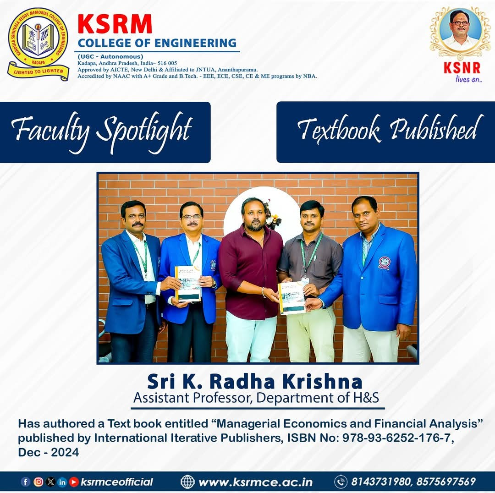

Faculty Spotlight – Textbook Publication
Sri K. Radha Krishna, Assistant Professor in the Department of Humanities and Sciences (H&S), has added a significant milestone to his academic journey.
He has authored a textbook titled "Managerial Economics and Financial Analysis", published by International Iterative Publishers.
ISBN: 978-93-6252-176-7
Publication Date: December 2024
This work will greatly benefit students and faculty, offering insights and structured knowledge in economics and finance from an engineering perspective.
Congratulations to Sri K. Radha Krishna on this prestigious achievement!